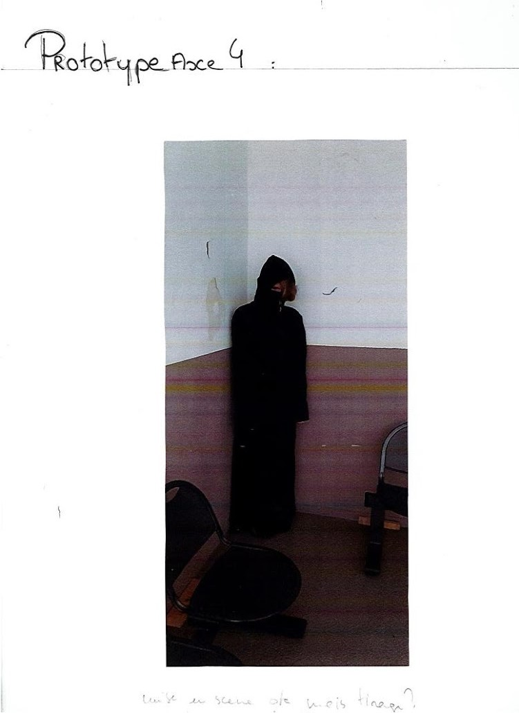

Mes questions
Comment la matière informe t’elle la forme ?
De quelle manière choisis t-on la matière ?
Étudier les différentes possibilités pour que le matériau soit le plus adapté aux différentes fonctions, aspects, usages, mises en œuvres, coût (etc.) du projet
Expérimentation de différentes matières afin de trouvé le matériaux le plus adapté au projet
Projets
Projet réutilisation Barrique
Étude des possibilités de découpe du bois et de la réutilisation d’une barrique

Dans ce projet j’ai découvert le travail du bois et j’ai réfléchi à quel matériaux utiliser pour supporter un être humain (un bois plus massif) et une autre sorte dans l’ouverture, moins épais car il supporte moins de poids (du contre plaqué)
Projet Papier Viviaux
Dans ce projet j’ai étudié différents papiers pour définir leurs caractéristiques.

Sur ceux projet il me fallait du papier pas trop épais mais solide pour que la boite soit solide et que les supports puissent maintenir la nourriture (donc j’ai utilisé des feuilles de 300mg/ au mètre carré )
La métamorphose des Oripeaux
Durant ce projet j’ai étudié différents tissus
Mes Références
pas encore choisis
Pourquoi fait-on des signes virtuelle des objets réel ?
Pourquoi amène t’on la fiction à la réalité ?
La prolifération du signe
Dans ce projet j’ai représenté des signes dit virtuels en présentant leurs proliférations.
La Gloriette
Références
- igor chak
- Ron arad
- les vases 44
- dessins virtuelle